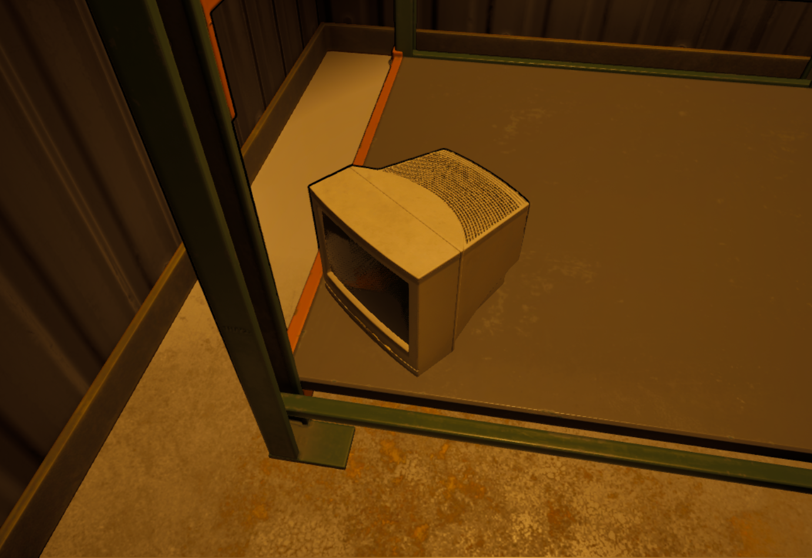

A warehouse game built around pressure, not combat.
이 프로젝트의 긴장감은 전투보다 감시와 운영에서 나옵니다. 플레이어는 택배를 들고 옮기고, 포장 스테이션에서 조합하고, 제출 구역에 맞는 결과물을 보내며 팀 경제를 유지해야 합니다. 잘못 제출하면 크레딧이 감소하고 의심도가 상승하며, Mother AI와 드론은 플레이어의 수상 행동을 감지해 경고와 처벌로 이어집니다.
감시 AI 아래에서 택배를 분류하고 포장하며 탈출을 준비하는 협동 멀티플레이 게임입니다.
Unreal Engine 5로 개발한 시스템 중심 협동 게임입니다. 플레이어는 창고 안에서 주문 웨이브를 처리하고, 팀 크레딧과 의심도를 관리하며, 게이트와 월드 플래그 조건을 충족해 최종 탈출 또는 엔딩에 도달해야 합니다.
저는 이 프로젝트에서 게임플레이 프로그래밍, AI 설계, 멀티플레이 시스템을 맡아, 온라인 세션부터 AI 감시 구조, 포장 및 제출 로직, 탈출 흐름까지 핵심 시스템을 구현했습니다.

이 프로젝트의 긴장감은 전투보다 감시와 운영에서 나옵니다. 플레이어는 택배를 들고 옮기고, 포장 스테이션에서 조합하고, 제출 구역에 맞는 결과물을 보내며 팀 경제를 유지해야 합니다. 잘못 제출하면 크레딧이 감소하고 의심도가 상승하며, Mother AI와 드론은 플레이어의 수상 행동을 감지해 경고와 처벌로 이어집니다.
협동은 단순한 동시 플레이가 아니라, 시스템적으로 강제됩니다. 팀 크레딧과 팀 의심도를 공유하고, 게이트는 특정 아이템이나 월드 플래그, 플레이어 수 조건을 요구하며, 탈출은 기본적으로 전원 탈출을 기준으로 설계되어 있습니다. 자연스럽게 운반, 포장, 조건 해제, 탈출 준비 같은 역할 분담이 발생합니다.
이 프로젝트는 세션 생성, 검색, 참가, 로비 준비 상태, 맵 이동 같은 온라인 흐름을 직접 다루고 있습니다. 또한 기존 Blaster 기반 네트워크 기술이 남아 있어 서버 시간 동기화와 서버사이드 리와인드까지 포함한 실전형 멀티플레이 구조를 보여줍니다.